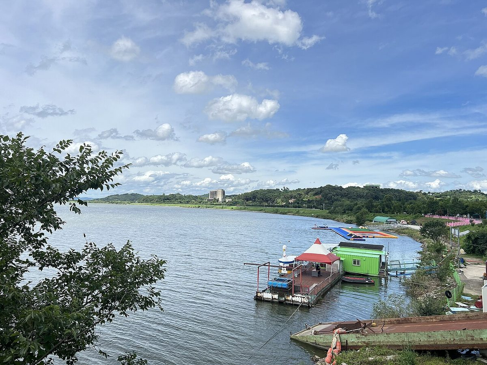

익산시, 햇빛소득마을 사업구역 '리'에서 '면' 단위로 넓혀 달라 정부에 건의

최정호 시장 "발전소 옆 마을도 함께 혜택 누려야"…하천 사면·폐교·국공유지까지 부지 찾기, 관리기관 협의는 과제
전북 익산시가 햇빛소득마을 사업구역을 지금의 리(里) 단위에서 면(面) 단위로 넓혀 달라고 정부에 건의했다. 최정호 익산시장은 3일 인터뷰에서 여산면 원수저수지를 예로 들며, 저수지가 있는 원수리 주민만 발전 혜택을 받고 바로 옆 마을은 사업에 참여할 수 없는 구조라고 설명했다. 최 시장은 "특정 리 단위로만 사업을 추진하다 보면 혜택에서 빠지는 마을들이 생길 수밖에 없다"며 면민 전체가 함께 수익을 나누는 것이 목표라고 밝혔다. 익산에서는 정부 공모를 통해 1차 4곳, 2차 3곳 등 모두 7곳이 햇빛소득마을로 뽑혔으며, 시는 지금 10% 수준인 수상태양광 설치 가능 면적을 최대 20%로 늘려 달라고도 요청했다. 시는 저수지가 없는 지역을 위해 국공유지, 물이 흐르지 않는 하천 구간의 사면, 폐교 부지를 발전 부지로 쓰는 방안도 검토하고 있다. 다만 이런 부지는 관리 주체의 사용허가가 필요하고, 하천 사면은 홍수 관리 영향을, 폐교는 교육청 등 소유 기관과의 협의를 먼저 거쳐야 한다.
시민에너지 관점
덴마크는 2009년부터 육상풍력 사업자가 지분 20% 이상을 반경 4.5km 안 주민에게 먼저 내놓도록 해, 발전기가 선 땅의 주인이 아니어도 이웃 마을이 함께 지분을 나누게 했다. 사업구역을 넓히면 이해관계가 복잡해지고 외부 자본이 끼어들 틈이 커진다는 우려도 있지만, 출자 자격을 그 면에 사는 주민으로 묶으면 수익은 지역 안에 머문다. 부지가 있는 마을만 돈을 버는 구조는 농촌 안에 새로운 격차를 만들고, 결국 태양광에 대한 반감으로 돌아온다. 정부는 사업 단위 확대와 함께 하천·폐교 같은 공공 유휴부지를 주민 공동 사업에 먼저 내주는 기준을 서둘러 마련해야 한다.
출처: 투데이안 2026-11-08 엄범희 원문 보기
益山市、ひかり所得村の事業区域を「里」から「面」単位へ広げるよう政府に建議
崔正浩市長「発電所の隣の村も一緒に恩恵を受けるべき」…河川斜面・廃校・国公有地まで用地探し、管理機関との協議が課題
全羅北道益山市は、ひかり所得村(햇빛소득마을)の事業区域を現在の里(リ)単位から面(ミョン)単位に広げるよう政府に建議した。崔正浩(チェ・ジョンホ)益山市長は3日のインタビューで、礪山面(ヨサンミョン)の元水(ウォンス)貯水池を例に挙げ、貯水池のある元水里の住民だけが発電の恩恵を受け、すぐ隣の村は事業に参加できない仕組みだと説明した。崔市長は「特定の里単位だけで事業を進めると、恩恵から漏れる村が出ざるを得ない」と述べ、面の住民全体で収益を分け合うことが目標だとした。益山では政府の公募で1次4カ所、2次3カ所の計7カ所がひかり所得村に選ばれており、市は現在10%程度の水上太陽光の設置可能面積を最大20%に広げるよう求めている。市は貯水池のない地域のため、国公有地、水の流れていない河川区間の斜面、廃校の敷地を発電用地として使う案も検討している。ただし、こうした用地には管理主体の使用許可が必要で、河川斜面は洪水管理への影響を、廃校は教育庁など所有機関との協議を先に経なければならない。
市民エネルギーの視点
デンマークは2009年から、陸上風力の事業者に持ち分20%以上を半径4.5km以内の住民へ優先的に提供させ、発電機が立つ土地の所有者でなくても近隣の村が一緒に持ち分を分け合えるようにした。事業区域を広げれば利害関係が複雑になり、外部資本が入り込む余地が大きくなるとの懸念もあるが、出資資格をその面に住む住民に限れば収益は地域の中にとどまる。用地のある村だけが稼ぐ構造は農村の中に新たな格差を生み、結局は太陽光への反発となって返ってくる。政府は事業単位の拡大とあわせ、河川や廃校のような公共の遊休地を住民の共同事業に優先して提供する基準を急いで整えるべきだ。
出典: 투데이안 2026-11-08 엄범희 原文を読む
益山市建议政府将"阳光收入村"项目区域从"里"扩大到"面"
崔正浩市长:"电站旁边的村庄也应共享收益"…河道坡面、废校、国公有地都在找地,与管理机关协商仍是课题
韩国全罗北道益山市向中央政府建议,将"阳光收入村"(햇빛소득마을)的项目区域从目前的"里"(行政村)单位扩大到"面"(乡)单位。益山市长崔正浩在3日的采访中以砺山面元水水库为例说明,目前只有水库所在的元水里居民能获得发电收益,紧邻的村庄却无法参与项目。崔市长表示:"如果只按特定的里推进项目,难免会有村庄被排除在受益之外。"他说,目标是让全面居民共同分享收益。益山已通过政府公开征选,第一批4处、第二批3处,共7处入选阳光收入村;市政府还要求把目前约10%的水上光伏可安装面积提高到最多20%。针对没有水库的地区,市政府也在研究利用国公有地、不流水河段的坡面以及废校用地作为发电用地。不过,这些用地须取得管理主体的使用许可,河道坡面要先评估对防洪管理的影响,废校则须先与教育厅等所有机构协商。
市民能源视角
丹麦自2009年起要求陆上风电开发商把至少20%的股份优先提供给半径4.5公里内的居民,即使不是风机所在土地的主人,邻近村庄也能一同分享股份。有人担心扩大项目区域会使利益关系变复杂,外部资本也更容易介入;但只要把出资资格限定为该面的居民,收益就会留在当地。只有拥有用地的村庄赚钱,会在农村内部制造新的差距,最终转化为对光伏的反感。政府应在扩大项目单位的同时,尽快制定把河道、废校等公共闲置用地优先交给居民共同项目的标准。
来源: 투데이안 2026-11-08 엄범희 查看原文
Iksan Asks Government to Widen Sunlight Income Villages From Single Villages to Whole Townships
Mayor Choi Jeong-ho says neighbouring villages should share the benefits; river slopes, closed schools and public land eyed as sites, but agency approvals remain a hurdle
Iksan City in North Jeolla Province has asked the central government to widen the project area of its sunlight income village (햇빛소득마을) programme from the current ri (village) level to the myeon (township) level. In an interview on 3 November, Mayor Choi Jeong-ho pointed to the Wonsu reservoir in Yeosan-myeon, saying only residents of Wonsu-ri, where the reservoir sits, can benefit from the power it generates, while the village next door cannot join. "If projects are run only by individual ri, some villages will inevitably be left out of the benefits," Choi said, adding that the goal is for everyone in the township to share the income. Seven sites in Iksan have been selected through government calls, four in the first round and three in the second, and the city has also asked for the area allowed for floating solar to be raised from around 10% now to as much as 20%. For areas without reservoirs, the city is looking at public land, slopes along dry stretches of rivers and closed school sites. Such sites, however, need use permits from the bodies that manage them, river slopes must first be assessed for flood-control impacts, and closed schools require agreement with education offices and other owners.
Citizen Energy View
From 2009 Denmark required onshore wind developers to offer at least 20% of each project to residents within 4.5km, so neighbouring villages could share ownership even if the turbines stood on someone else's land. Some worry that wider project areas complicate interests and open the door to outside capital, but if the right to invest is limited to people living in the township, the income stays local. A system in which only villages with suitable land earn money creates new gaps within rural areas and ultimately feeds resentment against solar. Alongside widening the project unit, the government should quickly set rules that give residents' joint projects first access to idle public land such as river slopes and closed schools.
Source: 투데이안 2026-11-08 엄범희 Read the original